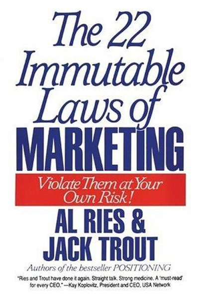

Why Did Zune Fail?
The 'iPod Killer' That Killed Microsoft's Music Business
📜 What Happened
In 2006 Microsoft looked at the iPod — which had effectively owned 'music player' in the world's mind for five years — and decided to compete head-on with a me-too device, the Zune. It wasn't bad; it was late and indistinguishable. Microsoft outspent everyone but offered nothing the mind could file under 'different': same mp3, same white earbuds era, slightly clunkier software. By 2011 Microsoft killed the Zune brand entirely — the 'iPod killer' became a footnote, and Microsoft never seriously returned to consumer music.
☠️ The Fatal Mistake
Entering a market late with a me-too product and hoping money would move the mind — being second (or fourth) in a category nobody needed a second of.
🧠 The Lesson (Free for You)
It's better to be first than to be better — and if you can't be first, create a category where you can be. A 'me too, but richer' strategy against an entrenched leader is a donation, not a business.
📕 The Antidote Book

Ries and Trout distilled marketing into 22 immutable laws — the rules of the mind-game they invented with Positioning. The laws are brutal and memorable: the Law of Leadership (it's better to be first than better), the…
📖 OPEN THE FULL INTERACTIVE BREAKDOWN →Searchable, filterable, free forever — they paid billions; your lesson is free.